Nella storia delle console non ci sono state soltanto battaglie a colpi di teraflop e guerre sante tra fan su chi avesse gli sprite più quadrati, ma anche regali all'industria dello sviluppo, ai fan stessi e, a parte, agli sviluppatori — regali che all'inizio sembravano il capriccio di un singolo produttore e che qualche tempo dopo diventavano uno standard senza il quale una console non si poteva più vendere all'utente finale. La cartuccia, la lista amici, la levetta analogica, la memory card rimovibile: qualcuno ha inventato ciascuna di queste cose per primo, di solito per un hardware specifico e per risolvere un problema specifico o per un gioco nuovo, e di solito senza rendersi conto di aver appena posato uno standard per i trent'anni successivi.
In questo articolo ripercorrerò i momenti principali e ciò che hanno dato allo sviluppatore di così importante da restare nelle fondamenta dello sviluppo di videogiochi. A volte il regalo è tecnico, come il Mode 7 o il suono PCM, a volte è più infrastrutturale e porta con sé il licensing o gli achievement, e a volte ha semplicemente cambiato il modo di pensare di uno sviluppatore, di una singola azienda o dell'intera industria. Come sempre nella nostra palude, ogni regalo arrivava di norma con i suoi scogli nascosti, e proverò a raccontare anche quelli, perché tutto si paga, e il game dev ama prima inventare e poi soffrire.
Il selvaggio, selvaggio west
Prima che Fairchild regalasse all'industria la cartuccia, non c'era proprio nulla da separare, e i primi cinque anni del gioco casalingo si sono svolti in un mondo dove la console e il gioco (o i giochi) erano lo stesso identico blocco di plastica e fili, e le parole "libreria di giochi" significavano una pila fisica di circuiti stampati.
Il Magnavox Odyssey del 1972, ideato da Ralph Baer, era insieme il vertice di quell'approccio e il suo vicolo cieco, perché dentro non c'erano né un processore né memoria nel senso comune del termine, ma solo circuiti analogici che disegnavano sullo schermo un paio di quadratini e un puntino, mentre i diversi "giochi" si cambiavano con schede a innesto che riconfiguravano letteralmente il circuito in un altro modo, ovvero un gioco non si poteva scrivere, si poteva soltanto progettare. Le schede per il ping pong da tavolo o per il tiro al bersaglio si vendevano a parte, ma quella era un'estensione del circuito, non del contenuto. E alla stessa scatola erano allegate delle mascherine di plastica per lo schermo, perché disegnare il colore o lo sfondo l'Odyssey proprio non lo sapeva fare, così una parte della "grafica" il giocatore era obbligato a incollarsela sul televisore con le proprie mani.
In parallelo, in quello stesso 1972, Atari sfornò l'arcade Pong, e furono gli arcade, non le console casalinghe, la prima vera industria videoludica in senso economico, perché il cabinato stava in un bar o nel foyer di un cinema, guadagnava un quarto di dollaro dopo l'altro, e lo sviluppatore ricevette per la prima volta un riscontro chiaro direttamente dal salvadanaio della macchina.
Sempre gli arcade furono i primi ad arrivare all'idea di "paga per la sessione" invece che "compra l'oggetto una volta sola", e questa idea di monetizzazione sta esattamente dentro le meccaniche free-to-play e live-service di oggi, mezzo secolo dopo: ne parlerò verso la fine dell'articolo, solo che adesso il quarto di dollaro è stato sostituito dal battle pass e dalle monetine.
Le console casalinghe dei primi anni pagarono la propria semplicità. In primo luogo con la miseria, perché un gioco cablato rigidamente nel circuito non poteva fisicamente ricevere una patch, un aggiornamento o un seguito, e il Coleco Telstar e le sue decine di cloni della metà degli anni settanta stampavano letteralmente lo stesso circuito per giocare a tennis sotto adesivi diversi, finché nel 1977 il mercato non crollò sotto il peso dei cloni.
In secondo luogo pagava lo sviluppatore stesso, o meglio l'ingegnere, perché non c'era né un linguaggio di programmazione, né un devkit, né in generale una divisione tra "quelli che scrivono il gioco" e "quelli che saldano la scheda": erano le stesse persone, e tutto il processo creativo si riduceva allo spessore del saldatore e alla resistenza al calore dell'essere umano.
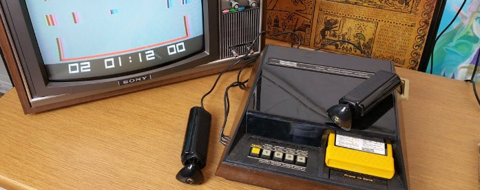
Fairchild Channel F
Se prima di questa console la macchina da gioco casalinga e il gioco (più raramente qualche gioco) erano un unico blocco di ferraglia cotto nel silicio in fabbrica, e a quello avresti giocato fino alla fine dei giorni del dispositivo, nel 1976 Fairchild aggiunse nella scatola le cartucce ROM intercambiabili, il che si rivelò un cambiamento dell'intera economia delle console casalinghe e determinò esattamente come si sarebbero venduti i giochi per i trent'anni successivi.
Il gioco divenne d'un tratto qualcosa da sviluppare e aggiornare, pubblicare, vendere, noleggiare e collezionare separatamente dalla scatola. E tutta l'industria, in cui più tardi sarebbe comparso il concetto stesso di editore separato dallo sviluppatore, insieme agli scaffali dedicati ai giochi nei negozi, alle date di uscita e in generale a una cosa come la "libreria di giochi di una piattaforma", nasce da quel momento di 50 anni fa, quindi sì: la cartuccia, o meglio il gioco separato dalla piattaforma, è il regalo più importante di FCF.
Lo sviluppatore aveva ora sbloccato l'achievement per cui il gioco è un prodotto a sé su un supporto — beh, oggi non è più esattamente così, ma insomma — e non una proprietà del pesantissimo "ferro da stiro" davanti al televisore. Tutte le generazioni successive giocarono con le nuove regole, mentre la stessa Fairchild cedette in fretta il passo ad Atari: primo non significa ancora sopravvissuto.
Il rovescio della medaglia è che la cartuccia non solo separò il gioco, ma lo congelò anche nella ROM, e un bug cotto dentro sarebbe arrivato al giocatore per sempre, visto che di patch non se ne sarebbero viste per altri vent'anni; per inciso, ne soffrivano anche le console stesse, ma quelle almeno si potevano riflashare. In più la produzione era lunga e costosa, così tutto il rischio di una tiratura invenduta ricadeva sull'editore sotto forma di ferraglia in magazzino.
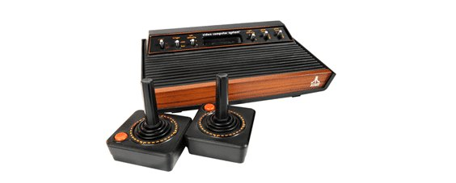
Atari 2600
La 2600 stessa (1977, MOS 6507 a 1,19 MHz, 128 byte di RAM) non aveva né un frame buffer né un processore video dedicato: di dispositivi video separati, nel senso moderno, non c'era nemmeno l'idea. L'immagine la console la generava al volo, e il codice doveva sincronizzarsi con il pennello elettronico letteralmente ciclo per ciclo, cosa di cui ho già scritto in "Come funziona la memoria nelle console di gioco" su Habr. Se la vostra logica nel blanking verticale si mangiava dieci cicli più del dovuto, la riga successiva veniva disegnata male, e questo determinava quanta logica si potesse infilare nel gioco stesso.
Ma la console è rimasta nella memoria per aver regalato al mondo la professione del programmatore di console come mestiere a sé: non c'erano più "programmatori in generale" ma persone che tengono a mente come funziona la logica del gioco sul dispositivo, perché un programmatore normale non sempre riusciva a cavarsela con una cosa simile, e non sempre gliene importava.
Il secondo regalo, molto più importante per l'industria, fu la nascita dell'istituto dell'editore terzo. Lo "partorirono", se così si può dire, ex dipendenti della stessa Atari, che se ne andarono e fondarono Activision (1979), conquistando in tribunale il diritto di fare giochi per l'hardware altrui. Nacque così il modello industriale "piattaforma più studi indipendenti", su cui poggia tutto ciò che è venuto dopo. La crisi del 1983, tra l'altro, è cresciuta dal rovescio di quella stessa libertà, ma questa è già la trama del prossimo articolo, "Il cimitero delle idee".
Ma il rovescio del Mestiere furono persone che oltre alla "corsa al pennello" non sapevano fare nient'altro e la cui esperienza era inchiodata a una sola piattaforma. Da qui è cresciuto anche il culto dell'hack eroico e i tentativi di infilare un gioco in 128 byte di RAM e un paio di kilobyte di ROM ingannando il pennello, la fisica e le leggi della fisica. E ingannavano davvero, tirando alla luce del sole la casta dei Maghi. L'industria si sta ancora curando da quell'antipattern del "programmatore-mago con una padronanza non documentata della magia nera", e si è annidato proprio qui, sul primo hardware di massa, dove semplicemente non si poteva fare altrimenti.
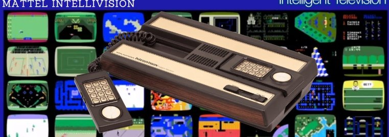
Mattel Intellivision
L'Intellivision (1979) propose agli sviluppatori un firmware di sistema chiamato Exec, che conteneva un insieme di subroutine già pronte che i giochi richiamavano invece di riscrivere ogni volta tutto da zero sul metallo nudo. Exec divenne il prototipo di ciò che oggi chiamiamo API di sistema e SDK, ed era in sostanza il primo SDK per console, in cui la piattaforma dà allo sviluppatore dei servizi e non soltanto l'accesso al processore, un manuale e le stampelle descritte nell'errata.
E poi c'era PlayCable, la consegna dei giochi via TV via cavo, cioè la distribuzione digitale un paio di decenni prima che a mastro Gabe venisse in mente l'idea stessa di consegnare byte attraverso la rete e non attraverso lo scaffale del negozio. Ma tecnicamente fu un vicolo cieco del suo tempo, perché la tecnologia arrivò molto prima che il giocatore comune potesse accettarla: perché pagare dieci dollari per la possibilità di scaricare un gioco nuovo, quando puoi andare a piedi fino al negozio o al noleggio e per gli stessi dieci ottenere una scelta tra centinaia di titoli.
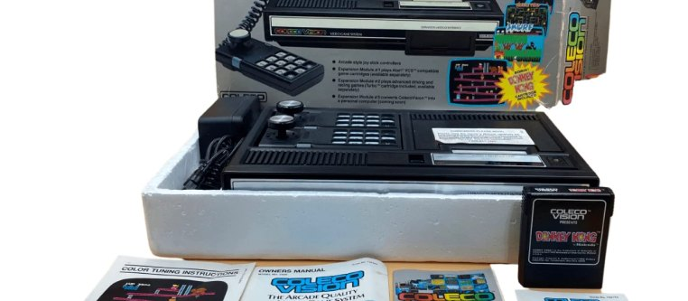
ColecoVision
ColecoVision, cercando di tirare dalla propria parte una fetta del mercato del concorrente, nel 1982 pubblicò un modulo di espansione che permetteva di giocare alle cartucce dell'Atari 2600, mostrando la possibilità della compatibilità attraverso un add-on hardware e regalando all'industria l'idea del trasferimento delle librerie di giochi. Tecnicamente dentro c'erano quasi tutte le viscere hardware della stessa Atari 2600 (il chip TIA e altri), cioè la console faceva semplicemente girare l'hardware altrui dentro di sé, invece di emularlo via software.
Ma un regalo più significativo fu l'uso di componenti standard (il VDP TMS9918 di Texas Instruments) nella progettazione delle console. Per lo sviluppatore questo significava moltissimo: le funzionalità ben documentate del chip diventarono di fatto un'API comune per la grafica a tile e sprite di un'intera generazione. Adesso si poteva imparare il VDP una volta e scrivere giochi per più piattaforme insieme; a questa idea tornerò quando arriveremo alle primitive grafiche.
Anche i componenti standard, si scopre, hanno un rovescio, e all'improvviso ti ritrovi costretto a competere con altri giochi sullo stessissimo hardware. Imparare il VDP una volta sola è comodo, ma non hai nemmeno un vantaggio hardware che non abbia anche il vicino, e tu stesso diventi ostaggio di Texas Instruments, dei suoi prezzi, delle sue forniture e della sua roadmap. E il "gioca alla libreria altrui tramite add-on" aprì la strada non solo al trasferimento dei giochi tra piattaforme, ma anche a una processione di cause su chi mai possieda i diritti su quei giochi e su quelle librerie.
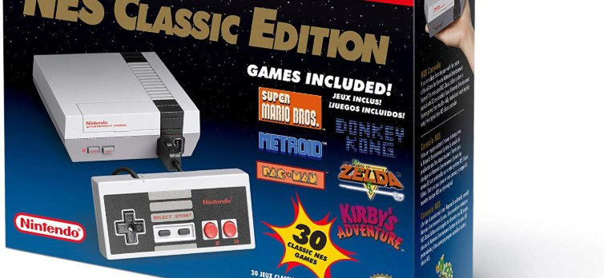
NES
Dopo il crollo del 1983 i produttori di piattaforme si trovarono d'accordo sul fatto che troppa libertà per le terze parti è pessima, perché il mercato si ritrovò sommerso di giochi spazzatura, giochi mediocri e trash puro, che in certi casi rompeva perfino le console stesse.
La risposta di Nintendo fu il chip-lucchetto hardware 10NES, che più tardi diede all'azienda non solo il controllo sulla produzione delle cartucce e il famoso "Sigillo di qualità", ma di fatto il controllo su tutta l'industria.
Nacque così il modello di licensing, cioè l'idea di business per cui "il detentore della piattaforma decide che cosa esce", "quando esce" e "quanto costa", che vive ancora oggi sotto la rispettabile parola "certificazione". La gabbia si è rivelata così comoda e ben nutrita che ci viviamo tuttora, firmando l'NDA prima ancora che arrivi l'idea per il gioco.
Oltre alle decisioni organizzative e alla nascita della Gestapo digitale, la console portò con sé la crocetta direzionale, il D-pad (inventato da Gunpei Yokoi), che divenne il linguaggio dell'input direzionale per i decenni a venire, definendo non solo i metodi di input ma anche i generi di giochi pensati per quel tipo di input.
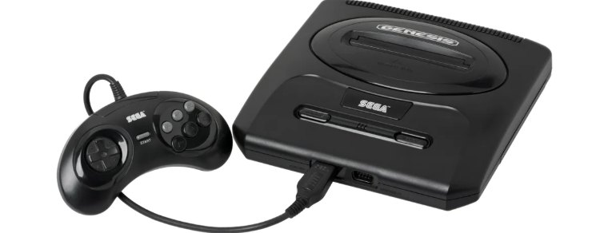
Sega Mega Drive
Il Mega Drive / Genesis fece tesoro dell'esperienza di ColecoVision e regalò allo sviluppatore un processore "adulto" e familiare, il Motorola 68000, lo stesso che si usava nei cabinati arcade, e se fino ad allora le conversioni dagli arcade erano piuttosto rare, adesso divenne possibile portare i giochi dai grandi arcade alle console casalinghe, e quello era un boccone molto ghiotto del mercato per tutti.
Fu proprio sui cabinati arcade che nacque l'idea dei franchise sportivi annuali, quelli che faceva EA Sports, mentre EA stessa, che conosceva bene il nuovo chip grazie al reverse engineering a "camera pulita", strappò a Sega condizioni di licenza morbide, aprendo il vaso di Pandora e mettendo in mano agli editori terzi una leva contro il detentore della piattaforma. Ma il regalino aveva la sua fregatura e si tradusse nella nascita dei mega-editori, che cominciarono a dettare le condizioni alle piattaforme, mentre lo studio qualunque camminava sotto il contratto standard allora e ci cammina ancora. Poi EA e Sega si spartirono semplicemente il mercato in due, e più tardi ancora diedero il via agli editori terzi meno grandi.
Sempre qui ci fu il secondo tentativo di distribuire giochi via TV via cavo (Sega Channel), fratello ben più ambizioso del PlayCable dell'Intellivision, con la possibilità di scaricare ROM arbitrarie.
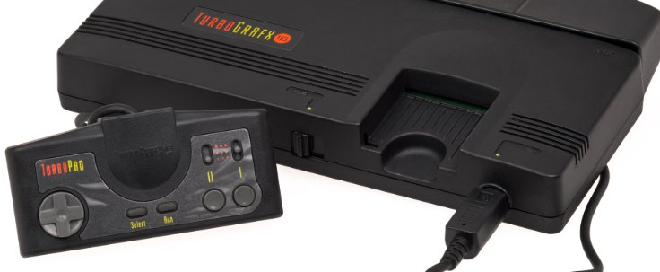
TurboGrafx
In Giappone la console con il lettore CD-ROM² fu la prima al mondo ad aprire la porta al supporto ottico in una console casalinga. Non era semplicemente "una cartuccia più grande": fu di fatto l'uscita dell'economia della distribuzione dei giochi, dai calzoncini corti dei "giocattoli", verso il campo dell'elettronica domestica a tutti gli effetti, quella dei giradischi, dei televisori e del resto.
Allo sviluppatore diede la possibilità di registrare colonne sonore CD complete e asset di grandi dimensioni senza dover badare al packing dei dati, e anche di tenere sul disco varianti diverse degli asset, semplicemente perché la capienza lo permetteva. Senza questa console non sarebbero stati pensabili né i volumi oltre i 2 MB, né il suono degli anni novanta, né le tirature della futura PlayStation. Ma di nuovo: primo non vuol dire di successo, e in questo caso non vuol dire nemmeno sopravvissuto.
La gioia di possedere il lettore si pagò due volte, letteralmente. La prima volta con il portafoglio, perché il lettore non arrivava nella scatola con la console ma si comprava a parte, così un gioco su disco non si rivolgeva a tutto il pubblico già di per sé di nicchia, ma a un suo strato sottile, quello che aveva sborsato per l'add-on. La seconda volta a pagare era già lo sviluppatore, perché per poter pubblicare un gioco su disco bisognava firmare un accordo di licenza separato, ovviamente per un paio di sicli.
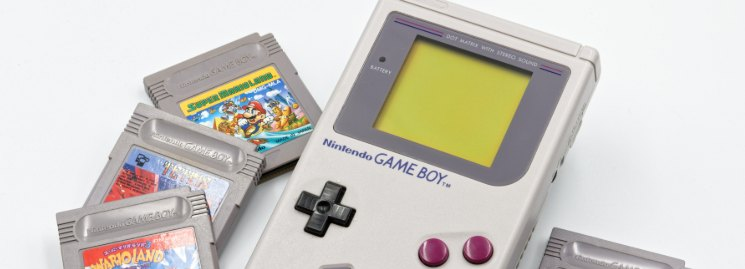
Game Boy
Tecnicamente il Game Boy, perfino sullo sfondo di tutto il resto nel 1989, era una cosina modesta. Schermo monocromatico senza retroilluminazione, che nelle scene dinamiche mostrava una poltiglia verdognola, ma aveva la possibilità di scambiare e commerciare (!!!) Pokémon tra due dispositivi, il che trasformò il collegamento tra due apparecchi in una meccanica di gameplay e di monetizzazione, regalando al mondo il design "colleziona e scambia", da cui poco più tardi sarebbero cresciute le skin e gli achievement che conosciamo e che ancora oggi nutrono interi franchise.
Il secondo regalo fu più che altro emotivo e ideologico, diciamo così. Il gracile Game Boy sbaragliò concorrenti tecnicamente superiori e dimostrò che autonomia, prezzo e affidabilità contano più dei megahertz e dei megabyte di RAM, dando vita a un filone a sé, quello delle console portatili.
Ma il "colleziona e scambia", antenato diretto di skin, gacha e loot box, portò al loop del collezionismo, e la sete di denaro si rivelò ancora una volta lo strumento perfetto per la monetizzazione, generando quel gacha stesso.
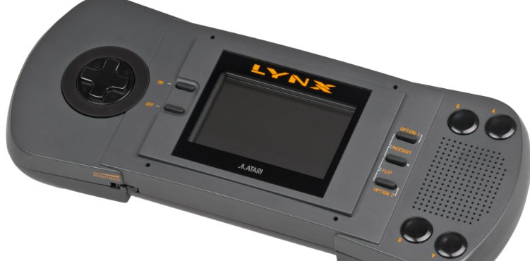
Atari Lynx
Su questo sfondo il Lynx, uscito nel 1989, era una console venuta dal futuro, con a bordo uno schermo a colori veloce e retroilluminato, scalatura e rotazione hardware degli sprite, uno schermo ribaltabile per i mancini e una rete per un mucchio di dispositivi, ma questa console teoricamente potente perse commercialmente contro il mattone grigio che era il Game Boy.
Perse sul prezzo e sulla durata delle batterie, per cui l'eredità del Lynx è più che altro concettuale: ignorare del tutto l'hardware non si può, ma la cosa più importante, come sempre, sta nel portafoglio del giocatore.
L'hardware venuto dal futuro aveva però un conto da pagare, e a saldarlo non era tanto il giocatore quanto lo sviluppatore. La scalatura e la rotazione hardware degli sprite divoravano la già scarsa banda passante e il tempo dell'artista, e un talento disposto a smanettare con un chipset che non esiste da nessun'altra parte bisognava andarselo a cercare.
Di talenti ce n'erano pochi, quindi anche la libreria di giochi era piccola, farli era caro e per nessuno, gli editori lo vedevano e non avevano fretta, gli sviluppatori vedevano gli editori e non avevano fretta nemmeno loro, e il cappio si stringeva da solo.
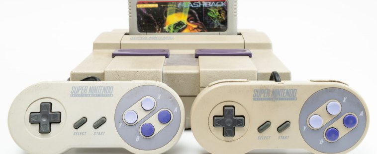
SNES
Lo SNES del 1990 regalò al mondo tre cose in una volta sola, ognuna delle quali è sopravvissuta alla propria generazione ed è diventata un nuovo standard dell'industria.
Il suono PCM campionato attraverso il chip Sony SPC700 liberò i giocatori da bip e cigolii astratti, portando nei giochi strumenti veri, registrati a campioni nei migliori studi del mondo. E regalò per di più all'industria le professioni di programmatore audio e di sound designer, perché da quel momento il suono all'interno di un team assunse la forma che ha oggi, e non era più una semplice tabella di frequenze.
Il Mode 7, ovvero la rotazione e la scalatura hardware del livello di sfondo, che da solo generò generi a sé come le piste pseudo-3D o il kart (Mario Kart).
E infine i coprocessori, che a quel tempo stavano nella cartuccia. E adesso i giochi potevano differenziarsi visivamente, cioè si poteva consegnare insieme al gioco della potenza aggiuntiva, superiore all'hardware di base della console. L'idea che "l'acceleratore viaggia nella scatola insieme al gioco" spinse il 3D nel mainstream e fece crescere studi che poi passarono al 3D vero e proprio.
Ma la bella idea di portarsi appresso l'hardware nuovo funziona fino al momento in cui zia Nina continua a produrre hardware con quella feature. Alla fine l'idea si rivelò un vicolo cieco, schiacciato dal CD a basso costo e dall'hardware standard, mentre il Mode 7 degenerò in fretta in un trucco di quei pochi studi che sapevano lavorarci.
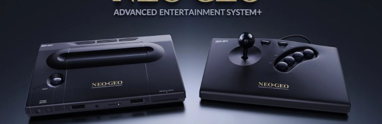
Neo Geo
Il Neo Geo AES (1990) era un lusso senza compromessi per ogni giocatore dei primi anni novanta, perché in casa stava di fatto lo stesso identico hardware del cabinato arcade, e le cartucce erano arcade, e il prezzo... era anch'esso arcade e lussuoso in modo indecente.
Allo sviluppatore diede la possibilità di lavorare con una memory card e spostò il salvataggio da un chip saldato sulla scheda a un supporto rimovibile, che si poteva portare dal club a casa e ritorno, mostrando a tutta l'industria la possibilità del salvataggio portatile come oggetto fisico a sé.
Anche le cartucce erano vere cartucce arcade, cioè mostruose per capienza e per prezzo, e questo ribaltava l'economia dello sviluppo, perché un gioco per Neo Geo per definizione non poteva essere piccolo e a buon mercato. La soglia d'ingresso tagliava fuori tutti tranne SNK e una manciata di studi di picchiaduro e beat 'em up sotto la sua ala, da cui la libreria: graficamente lussuosa ma povera di generi. Una piattaforma affilata per gli arcade partoriva giochi arcade, e di "casalingo" ci aveva solo la presa della corrente.
Qualche anno dopo l'idea delle memory card sarà raccolta da PlayStation, che la renderà uno standard dell'industria, e noi percepiremo "il mio salvataggio come una cosa che posso portarmi dietro" come qualcosa di ovvio. Ovvio non lo è affatto: per questo un grazie a parte al costoso giocattolo di SNK.
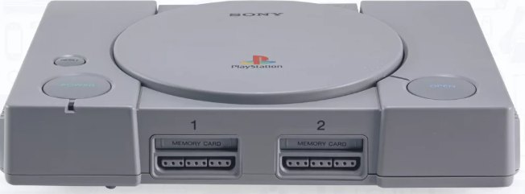
Sony PlayStation
Se il Neo Geo ci ha dato la memory card, la PlayStation del 1994 ci ha dato quasi tutto il resto di ciò che oggi si è soliti considerare un devkit, e in primo luogo l'accessibilità dello sviluppo. C'era il CD come supporto economico da produrre, e il coprocessore geometrico GTE che rese possibile il 3D delle origini, e un rasterizzatore sensato che rese prevedibile quello stesso 3D. E i devkit stessi, il C e Psy-Q, diedero la sensazione che una console si potesse programmare senza essere un superprogrammatore. Ma i programmatori normali scrivono codice normale, spesso con errori, ed è per questo che l'aspetto tipico dei giochi PS1, con le texture affini che nuotano e la geometria che trema, è letteralmente il prezzo del 3D a buon mercato, pagato da un'intera generazione di giocatori finché gli studi non hanno imparato a cucinarlo come si deve.
In più c'erano la memory card rimovibile e più tardi il DualShock, diventato il modello del gamepad moderno con due levette analogiche e la vibrazione.
Ma l'accessibilità dello sviluppo è insieme un regalo e una corda soffice con tanto di sapone profumato. Se "programmare lo può fare chiunque", allora anche produrre robaccia lo può fare chiunque, e gli scaffali si riempirono di nuovo di tutt'altro che capolavori.
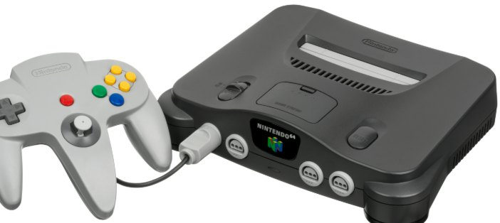
Nintendo 64
Mentre Sony distribuiva SDK a poco prezzo, l'N64 di Nintendo creava le regole del game design 3D, senza le quali i giochi oggi sarebbero completamente diversi. La levetta analogica sul pad rese norma il movimento fluido in tre dimensioni, e il force feedback un canale di ritorno obbligatorio.
La telecamera e lo Z-targeting di Super Mario 64 e Ocarina of Time fissarono i canoni dei giochi 3D su console, e la maggior parte dei giochi per console che escono oggi usa il "test di Mario" per verificare quanto sarà comodo per il giocatore orientarsi nel mondo.
Ma l'orgoglio di Nintendo è sempre stata la cartuccia, e quella aveva una capienza minuscola, che uccise sia il suono sia i filmati, costrinse a comprimere gli asset in modo bestiale e spinse Square con Final Fantasy VII dritta tra le braccia di Sony. Aggiungiamoci una cache delle texture di miseri 4 KB, il che significa che la console che ha fissato i canoni del 3D è entrata nella storia anche come la console delle texture sbrodolate.
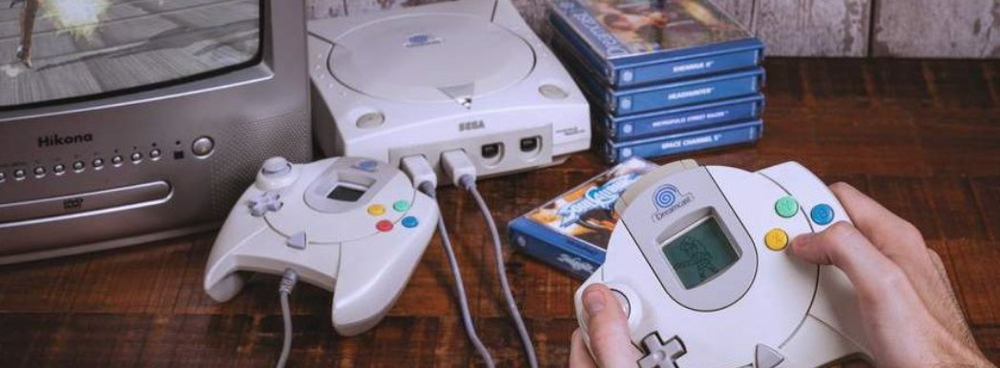
Dreamcast
Sega sfornò il Dreamcast nel 1998 con un modem vero e proprio già nella scatola, così l'online passò da esotismo per pochi eletti a cosa quotidiana, e Soccer, Phantasy Star Online e ChuChu Rocket dimostrarono che il multiplayer si poteva vendere come un gioco a sé.
Il secondo regalo era più piccolo, ma ha attecchito bene anch'esso. Il formato VMU, una memoria con schermo e processore propri, in cui si spostava non semplicemente una cella di salvataggio, ma un minigioco dentro il gioco, con la sua meccanica nascosta o un Tamagotchi a sé sulla memory card. L'idea che "il dispositivo di memoria sa fare qualcosa da solo" riemergerà poi nei posti più inaspettati, dalle icone dei trofei alle app compagne separate delle console moderne.
Ma il modem in ogni scatola lo pagava Sega stessa, e l'infrastruttura online del 1998 era senza soluzioni già pronte e con un pubblico che proprio non capiva a che servisse a una console una presa telefonica. La connessione via modem su una normale linea telefonica era lunga, rumorosa e puniva la mamma che in quel momento stava telefonando sul fisso.
E per quanto entrambe le idee siano sopravvissute e diventate la norma dell'industria, la console stessa e Sega stessa come produttrice di hardware sono passate a miglior vita: i regali portati sono sopravvissuti a chi li faceva in un senso molto più letterale del solito.
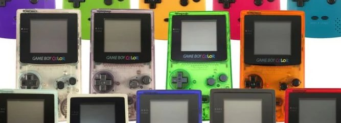
Game Boy Color
A prima vista "un Game Boy, ma a colori e con retrocompatibilità" era solo il "colori", ma nelle sue cartucce di Pokémon Gold/Silver c'era un orologio in tempo reale integrato, e questo regalò agli sviluppatori un nuovo asse di design nei giochi, facendo del tempo reale un'ulteriore meccanica di gioco e generando cose come il ciclo giorno-notte, gli eventi a calendario, le bacche che crescono: per tutte queste cose bisogna dire grazie alla piccola portatile gialla.
L'orologio in tempo reale nella cartuccia è un regalo mortale in senso letterale, perché la batteria si scarica, e con lei se ne va anche il salvataggio e tutto il "mondo vivo", così dopo — se va bene — un paio d'anni al collezionista tocca un cadavere freddo.
Ma peggio del timer è che questo bisnonno delle attuali meccaniche FOMO, "entra oggi, altrimenti ti perdi l'evento", è stato liberato dal guinzaglio in nome delle migliori intenzioni, per dare ai giocatori una nuova esperienza del mondo reale. E adesso un gioco live-service su due mi strattona un paio di volte all'ora perché raccolga quelle maledette monetine, facendomi per di più guardare una pubblicità e agitandomi le loot box sotto il naso.
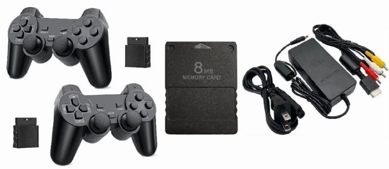
PlayStation 2
La PS2 è entrata nella storia come hardware non proprio amichevole, e le storielle sulla pila di manuali alta venti centimetri e sul mese necessario prima del primo triangolo... non sono storielle: nel nostro studio abbiamo i devkit della seconda PlayStation e la loro documentazione... non sono storielle.
Ma allo sviluppatore e all'industria la console regalò il DVD come supporto di gioco, con una capienza così grande che per quasi cinque anni la maggior parte dei giochi non riusciva a riempirla, e insieme uno dei lettori DVD più economici in un salotto dell'anno 2000, il che la rese la console più venduta della storia.
Quel successo di vendite aprì una nuova economia di scala a cui gli studi non avevano mai pensato. Il parco console gigantesco fece della PS2 il bersaglio principale dello sviluppo, dove andavano i budget, i talenti e la logica del prima-il-gioco-sulla-PlayStation.
L'economia di scala è un discorso a parte, perché gli studi non scelgono più che tipo di giochi vogliono fare: quelli che l'editore vuole sulla sua piattaforma, quelli vorranno fare. Adesso vi ritrovate sia un'asticella minima di progetto sia il budget per arrampicarvici sopra, e in aggiunta l'obbligo di ripagare lo sviluppo su quell'enorme parco installato, ma... adesso il gioco è obbligato a puntare a quel parco per intero.
Così la scala cominciò a soffocare i progetti di fascia media, non con un divieto... no, banalmente con i soldi. E gli studi che prima facevano cose rischiose, strane e di nicchia e spingevano avanti l'industria... sono morti in silenzio e hanno chiuso, perché l'opzione di fare qualcosa di sicuro e venderlo a tutti si ripaga grazie al parco installato, mentre "Petja e Vasilij Ivanyč salvano il gatto Matroskin" no.
Il gonfiarsi dei budget, la corsa al "ancora più costoso, ancora più sicuro", la paura di pubblicare qualcosa che non sia per tutti: è tutto cresciuto da qui, dalla scoperta che su un parco abbastanza grande conviene fare meno giochi ma più grossi. L'AAA come categoria e l'AAA come maledizione sono nati in questo punto del tempo.
Il secondo regalo fu il consolidamento dell'idea della retrocompatibilità come ulteriore incentivo a vendere la console ai giocatori: da quel momento ogni nuova console era obbligata a saper gestire la libreria di quella vecchia.
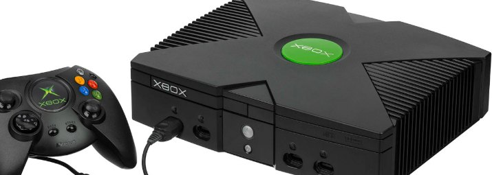
Xbox
L'Xbox originale del 2001 era quasi "un PC in una scocca da console", con un Pentium III e una GeForce 3 a bordo e il più comune dei dischi rigidi WD, di quelli che si potevano comprare in negozio, e questo produsse lo spostamento infrastrutturale su cui poggia tutta l'industria console moderna.
Adesso l'HDD diventava parte della console, aprendo la strada alla preinstallazione dei giochi e alla cache dei dati, che a loro volta resero possibili le patch, i DLC e i download digitali. All'inizio il disco fu messo lì perché gli sviluppatori volevano mondi enormi e l'online... ma l'online divenne presto una feature a sé, generando il profilo unico del giocatore, la lista amici, il matchmaking, la chat vocale e un concetto come l'avidità... ops... il negozio digitale, mi sono confuso, ovviamente.
Oggi tutto il gaming console in rete è costruito su questo modello — di nuovo mi viene sulla punta della lingua il gambling in rete, ma non lo dirò ad alta voce. E così viene fuori che il Dreamcast ha arato, la PS2 ha seminato e l'Xbox ha raccolto, e poco tempo dopo Nintendo avrebbe recintato quel campo con un muro di tre metri di... limitazioni, cioè FriendCode, abbonamento e giochi bloccati per regione.
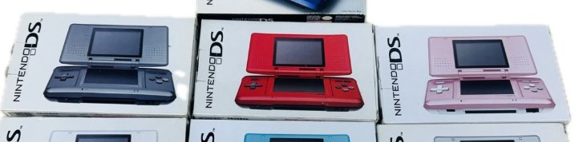
Nintendo DS
Il DS del 2004 prese l'idea dello schermo tattile come meccanica di gioco, e si scoprì che un gioco si può controllare in qualunque modo, spalancando le porte al design casual mobile e anticipando la UX del gaming da smartphone prima ancora che gli smartphone diventassero dispositivi da gioco.
Il secondo regalo fu lo schema del Download Play, in cui da una sola cartuccia il gioco veniva distribuito via etere a tutta la compagnia, e agli ospiti non serviva né una copia propria né alcuna installazione, mentre un'installazione temporanea viveva nella memoria della console altrui finché non la si spegneva. L'idea stessa di "una copia per tutti all'interno della rete" era già stata sperimentata su PC con le copie spawn di Half-Life e Counter-Strike (la modalità per i centri gioco), ma lì servivano ancora la rete, il server e l'installazione. Il DS buttò via anche questo, abbassando la soglia d'ingresso al gioco in compagnia fino ad "accendi e giochi", e divenne in fretta una norma attesa.
Ma il sensore come meccanica si trasformò inevitabilmente nel sensore come obbligo, e un'intera ondata di giochi avvitò lo stilo e il "soffia nel microfono" solo perché ci fosse, semplicemente perché la piattaforma esigeva che quella feature venisse usata. La porta verso il design casual funzionava in entrambe le direzioni, e insieme al nuovo pubblico legittimò un fiume di giochi, mentre il Download Play ci ha portati al noleggio dei giochi e alla possibilità di spostare meccaniche di gioco nei DLC.
Date un'occhiata al vostro accordo su Steam: siete proprio sicuri di essere ancora proprietari dei giochi che avete comprato? Appunto... e l'idea, a quanto pare, è vecchia quanto il DS.
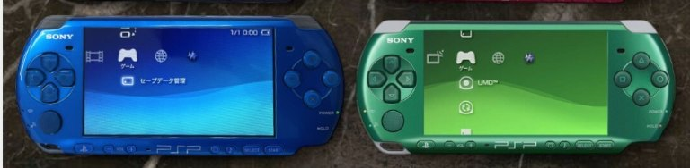
PSP
La PSP dello stesso anno portò allo sviluppatore la pratica di scalare un solo motore e gli stessi asset tra console diverse, dando ai motori 3D completi la possibilità di girare su dispositivi tascabili, e la "versione portatile" smise di significare "un altro gioco da zero".
Il secondo regalo fu la modalità co-op locale, attorno alla quale in Giappone è cresciuto il fenomeno Monster Hunter e il "ci siamo trovati in quattro, stiamo qui a cacciare", e l'idea precoce del Remote Play con la PS3 sotto forma di streaming dell'immagine dalla console grande a uno schermo piccolo, che ha aperto la strada al cloud gaming e al cross-play.
I regali si sono pagati con un formato proprietario (l'UMD): lento, vorace e caro da stampare. Morto dalla nascita, perché un film su un dischetto per una sola console non serviva a nessuno, mentre supportarlo doveva farlo chiunque volesse fare un gioco per quella piattaforma.
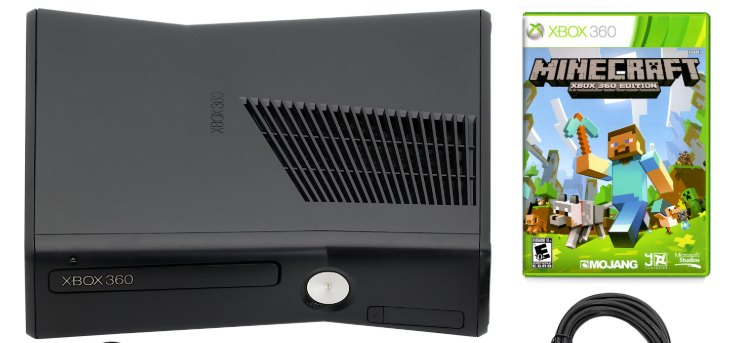
Xbox 360
Il ciccione aggiunse ai giochi gli achievement e il concetto di "Gamerscore", che divennero in fretta lo standard di meta-progressione a livello di sistema e che sono stati copiati da tutte le piattaforme che conosco, dai Trophy di Sony agli achievement di Steam. E all'improvviso lo sviluppatore si ritrovò un nuovo strumento di retention del giocatore e un nuovo linguaggio per parlare con il pubblico, integrato in modo trasparente nei giochi e non inchiodato di lato.
Il secondo regalo non era rivolto a nessuno in particolare: Xbox Live Arcade fu aggiunto per tirare dentro più sviluppatori indie, ma si scoprì che normalizzava anche la distribuzione digitale di giochi completi, e non solo di demo e giochini, e introdusse il concetto di certificazione obbligatoria delle funzioni online come normale parte della pipeline di un gioco. E adesso nessun gioco può considerarsi solo se esce in scatola: qualcosa di online ci sarà per forza, perché senza funzioni online semplicemente non passate la certificazione.
E infine il gamepad del 360 è diventato il controller di default per il PC, e adesso se un gioco scrive "supporto gamepad", per impostazione predefinita si intende proprio il layout Xbox.
Non appena il Gamerscore cominciò a portare utenti, e pure qualcosa di verde con sopra dei presidenti, prese a influenzare i giochi, e il design cominciò a piegarsi alla retention, arrivando all'assurdo del tipo "uccidi 1000 nemici" per una spunta, aprendo la strada al grinding infinito per una cifretta virtuale nel profilo. Nacque così un design guidato non da designer e sceneggiatori, ma da metriche e tabelle. E la certificazione online obbligatoria apriva la strada all'inferno: adesso tutti gli altri attori del mercato cominciarono a pretendere che qualunque gioco in scatola avvitasse almeno qualcosa di in rete, uccidendo il single player puro e mettendo l'industria sul tapis... ops... sul tapis roulant dell'online.
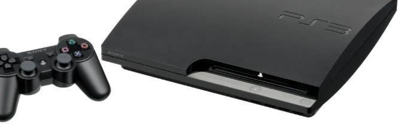
PlayStation 3
La PS3 è famosa per il suo problematico processore Cell e per la battuta che "il cubo di Rubik resta il Rubik del cubo per le prime cento volte". Il regalo principale di questa console fu l'online gratuito, che sullo sfondo del concorrente sembrava illogico: Microsoft si prendeva il suo siclo per il gioco in rete come abbonamento (Xbox Live Gold), mentre Sony aprì il multiplayer gratis. Ma si scoprì che l'ingresso gratuito porta alla piattaforma molti più soldi del pagamento per l'accesso stesso, perché poi dagli esseri umani si possono cavare monetine praticamente all'infinito.
Ma anche "l'online gratuito che rende più di quello a pagamento" ha il suo rovescio, che ha definito in cosa si siano trasformati i giochi in generale. Non appena si capì che regalare l'accesso dà alla piattaforma più che venderlo, l'economia si spostò dal "vendere il gioco una volta" al "vendere un gioco più volte". L'ingresso gratuito non è stato un regalo al giocatore, ma ha cambiato i modelli di business dell'industria dal Gioco alla Retention: se i soldi adesso stanno in quanto tempo passi lì seduto e quanto compri dentro, allora il design comincia a servire non il piacere ma il tempo di sessione.
I battle pass, le stagioni, l'"entra oggi, compra domani", i negozi in-game, i soldi di gioco in cambio di soldi veri e tutto lo zoo del live-service crescono da questa scoperta dell'era PS3. L'online adesso ha valore non come feature, ma come tubo attraverso cui si possono chiedere al giocatore soldini ancora e ancora. Il giocatore da acquirente è diventato definitivamente una sorgente di flusso.
Il secondo regalo sembra paradossale, perché la tormentosa programmazione delle SPU ha abituato l'industria al multithreading e al pensiero compute. Perfino Tim Sweeney valutava la piena utilizzazione del Cell in circa cinque volte lo sforzo rispetto a un singolo core, e lo sviluppo su PS3 come il più laborioso di tutte le piattaforme precedenti.
Ha fatto male, ma un'intera generazione di ingegnEEri di videogiochi ha imparato a pensare in parallelo, a pensare ai dati e non solo al codice... io ho preso solo il bordo estremo di quell'epoca, quando la maggior parte delle stampelle e dei rastrelli era già stata raccolta e amorevolmente avvolta negli stracci, ma un paio di bug sulla terza mi è toccato ripararli lo stesso. In ogni caso l'eco della terza PlayStation si sente oggi in qualunque sviluppo GPGPU, come necessità di saper pensare oltre il singolo thread.
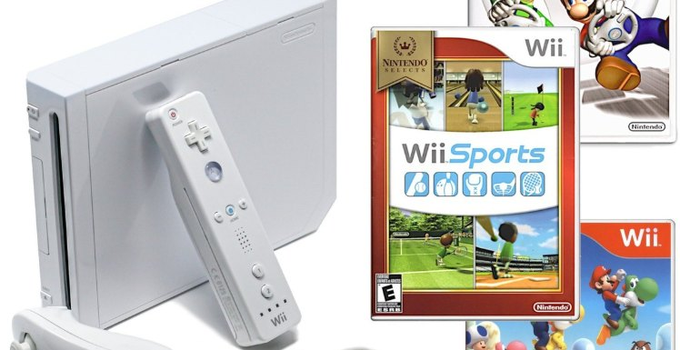
Nintendo Wii
La Nintendo del 2006 non sembrava più un attore di primo piano, ma manteneva lo status di leader di mercato, un pubblico enorme e fedele, e poteva permettersi degli esperimenti. Per questo uscì il Wii, che non rincorreva la grafica e la potenza, ma chiamò a giocare quelli che non avevano mai giocato, proponendo un controllo in stile telecomando del televisore. Il Giappone resta comunque la patria del vero game dev, delle macchine vere e dei samurai.
L'input motion irruppe nel mainstream dello sviluppo e costrinse tutti a studiare la meccanica dell'accelerometro, del giroscopio e la cinematica del movimento umano, aprendo la strada a Kinect, PS Move e più tardi a un filone a sé, quello dei giochi VR. L'industria poi si stancherà di agitare le braccia, cosa che resterà per il fitness in salotto, ma la porta verso i "giochi per le persone" era ormai aperta, e nessuno riuscirà a richiuderla.
Ma il controllo in stile telecomando spalancò la porta non solo a un nuovo pubblico, ma anche a un nuovo raffazzonare, e non appena la piattaforma fece dell'agitare la sua feature principale, arrivò un'ondata di giochi in cui il gesto era avvitato ovunque. Il gesto come input è impreciso e non ripetibile per sua stessa natura, e il designer, invece di aggirare la cosa, era costretto a metterla in vetrina. Da qui viene anche la famosa valanga di shovelware, quando la bassa soglia d'ingresso per un nuovo pubblico si è tradotta in una bassa soglia di qualità, e il Wii ha messo insieme una libreria in cui una manciata di trovate geniali annegava in un mare di minigiochi che si cancellavano cinque minuti dopo l'avvio.
Chiamando quelli che non avevano mai giocato, il Wii ha allo stesso tempo mostrato all'industria che a questo pubblico si può rifilare meno gioco per gli stessi soldi, generando il genere dei giochi casual. La porta verso i "giochi per le persone" è stata davvero aperta e non si è riusciti a richiuderla, perché si è riversata nel free-to-play mobile, portando la logica del "minimo di gioco, massimo di portata" fino al limite. Il Wii ha dimostrato che il mercato casual è enorme, ma di quella dimostrazione hanno approfittato tutt'altri rispetto a chi quella porta dei "giochi per le persone" l'aveva aperta.
Ai giorni nostri...
Arrivata all'ultima generazione di console, l'industria si era collettivamente stancata di soffrire eroicamente, anche di soffrire per delle sciocchezze, ed entrambe le console hanno ricevuto x86-64 e uno spazio di indirizzamento unico per CPU e GPU, cosa che gli sviluppatori chiedevano fin dai tempi della PS1, un attimo di pazienza.
Proprio questa convergenza tra console e PC ha permesso di avere motori comuni, un cross-platform facile e di chiudere l'epoca del "riscrivi da zero il sistema di gestione della memoria per ogni scatola".
Ma gli scogli nascosti, come al solito, non sono diventati meno numerosi: il bus unico ha generato la concorrenza tra CPU e GPU per la memoria, e il Jaguar da portatile, con le sue cache piccole, puniva la disposizione sciatta dei dati, dettando uno sviluppo in stile SoA invece che AoS, ma questi sono ormai problemi comprensibili e simili a quelli del PC. L'unico regalo degno di nota su questo sfondo mi sembra il Game Pass, l'idea del "Netflix per i giochi", che ha rifatto il taglio della monetizzazione e dei contenuti che ci finiscono dentro... e non sempre in meglio, definendo il vettore di movimento dei giochi console verso i servizi. Ed ecco che le altre grandi piattaforme non guardano più al prossimo teraflop del processore o al prossimo terabyte del disco, ma a come procurarsi anche loro un tubo simile, che porti sicli ogni mese e non solo al momento dell'acquisto del disco...
Così, se nel 1976 il regalo era la cartuccia, che ha separato il gioco dall'hardware, mezzo secolo dopo il regalo è diventato l'abbonamento, che ha separato definitivamente i soldi del giocatore dal gioco stesso, il che sarà forse il riassunto più onesto di dove ci hanno portati tutti questi cinquant'anni di regali generosi.
Sul gambling mobile... puah, mi si è appiccicato... sul gaming, magari un'altra volta.
← Tutti gli articoli